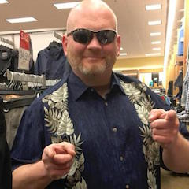
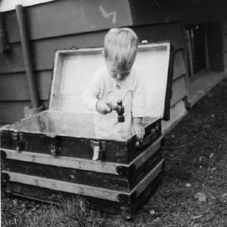

- You don't have any quests yet
Meet the team
Now, this plan of, or rather Yojo's, touching the selection of our craft; I did not like that plan at all. I had not a little relied upon Queequeg's sagacity to point out the whaler best fitted to carry us and our fortunes securely. But as all my remonstrances produced no effect upon Queequeg, I was obliged to acquiesce; and accordingly prepared to set about this business with a determined rushing sort of energy and vigor, that should quickly settle that trifling little affair. Next morning early, leaving Queequeg shut up with Yojo in our little bedroom—for it seemed that it was some sort of Lent or Ramadan, or day of fasting, humiliation, and prayer with Queequeg and Yojo that day; HOW it was I never could find out, for, though I applied myself to it several times, I never could master his liturgies and XXXIX Articles—leaving Queequeg, then, fasting on his tomahawk pipe, and Yojo warming himself at his sacrificial fire of shavings, I sallied out among the shipping. After much prolonged sauntering and many random inquiries, I learnt that there were three ships up for three-years' voyages—The Devil-dam, the Tit-bit, and the Pequod. DEVIL-DAM, I do not know the origin of; TIT-BIT is obvious; PEQUOD, you will no doubt remember, was the name of a celebrated tribe of Massachusetts Indians; now extinct as the ancient Medes. I peered and pryed about the Devil-dam; from her, hopped over to the Tit-bit; and finally, going on board the Pequod, looked around her for a moment, and then decided that this was the very ship for us.
Now, this plan of Queequeg's, or rather Yojo's, touching the selection of our craft; I did not like that plan at all. I had not a little relied upon Queequeg's sagacity to point out the whaler best fitted to carry us and our fortunes securely. But as all my remonstrances produced no effect upon Queequeg, I was obliged to acquiesce; and accordingly prepared to set about this business with a determined rushing sort of energy and vigor, that should quickly settle that trifling little affair. Next morning early, leaving Queequeg shut up with Yojo in our little bedroom—for it seemed that it was some sort of Lent or Ramadan, or day of fasting, humiliation, and prayer with Queequeg and Yojo that day; HOW it was I never could find out, for, though I applied myself to it several times, I never could master his liturgies and XXXIX Articles—leaving Queequeg, then, fasting on his tomahawk pipe, and Yojo warming himself at his sacrificial fire of shavings, I sallied out among the shipping. After much prolonged sauntering and many random inquiries, I learnt that there were three ships up for three-years' voyages—The Devil-dam, the Tit-bit, and the Pequod. DEVIL-DAM, I do not know the origin of; TIT-BIT is obvious; PEQUOD, you will no doubt remember, was the name of a celebrated tribe of Massachusetts Indians; now extinct as the ancient Medes. I peered and pryed about the Devil-dam; from her, hopped over to the Tit-bit; and finally, going on board the Pequod, looked around her for a moment, and then decided that this was the very ship for us.
Now, this plan of Queequeg's, or rather Yojo's, touching the selection of our craft; I did not like that plan at all. I had not a little relied upon Queequeg's sagacity to point out the whaler best fitted to carry us and our fortunes securely. But as all my remonstrances produced no effect upon Queequeg, I was obliged to acquiesce; and accordingly prepared to set about this business with a determined rushing sort of energy and vigor, that should quickly settle that trifling little affair. Next morning early, leaving Queequeg shut up with Yojo in our little bedroom—for it seemed that it was some sort of Lent or Ramadan, or day of fasting, humiliation, and prayer with Queequeg and Yojo that day; HOW it was I never could find out, for, though I applied myself to it several times, I never could master his liturgies and XXXIX Articles—leaving Queequeg, then, fasting on his tomahawk pipe, and Yojo warming himself at his sacrificial fire of shavings, I sallied out among the shipping. After much prolonged sauntering and many random inquiries, I learnt that there were three ships up for three-years' voyages—The Devil-dam, the Tit-bit, and the Pequod. DEVIL-DAM, I do not know the origin of; TIT-BIT is obvious; PEQUOD, you will no doubt remember, was the name of a celebrated tribe of Massachusetts Indians; now extinct as the ancient Medes. I peered and pryed about the Devil-dam; from her, hopped over to the Tit-bit; and finally, going on board the Pequod, looked around her for a moment, and then decided that this was the very ship for us.
Now, this plan of Queequeg's, or rather Yojo's, touching the selection of our craft; I did not like that plan at all. I had not a little relied upon Queequeg's sagacity to point out the whaler best fitted to carry us and our fortunes securely. But as all my remonstrances produced no effect upon Queequeg, I was obliged to acquiesce; and accordingly prepared to set about this business with a determined rushing sort of energy and vigor, that should quickly settle that trifling little affair. Next morning early, leaving Queequeg shut up with Yojo in our little bedroom—for it seemed that it was some sort of Lent or Ramadan, or day of fasting, humiliation, and prayer with Queequeg and Yojo that day; HOW it was I never could find out, for, though I applied myself to it several times, I never could master his liturgies and XXXIX Articles—leaving Queequeg, then, fasting on his tomahawk pipe, and Yojo warming himself at his sacrificial fire of shavings, I sallied out among the shipping. After much prolonged sauntering and many random inquiries, I learnt that there were three ships up for three-years' voyages—The Devil-dam, the Tit-bit, and the Pequod. DEVIL-DAM, I do not know the origin of; TIT-BIT is obvious; PEQUOD, you will no doubt remember, was the name of a celebrated tribe of Massachusetts Indians; now extinct as the ancient Medes. I peered and pryed about the Devil-dam; from her, hopped over to the Tit-bit; and finally, going on board the Pequod, looked around her for a moment, and then decided that this was the very ship for us.